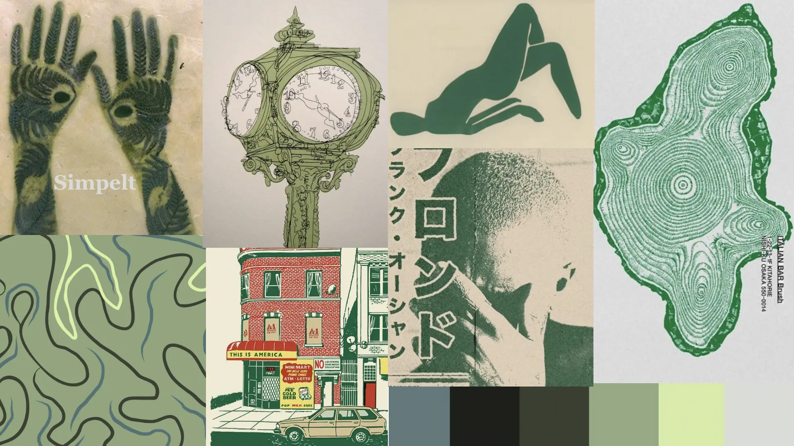
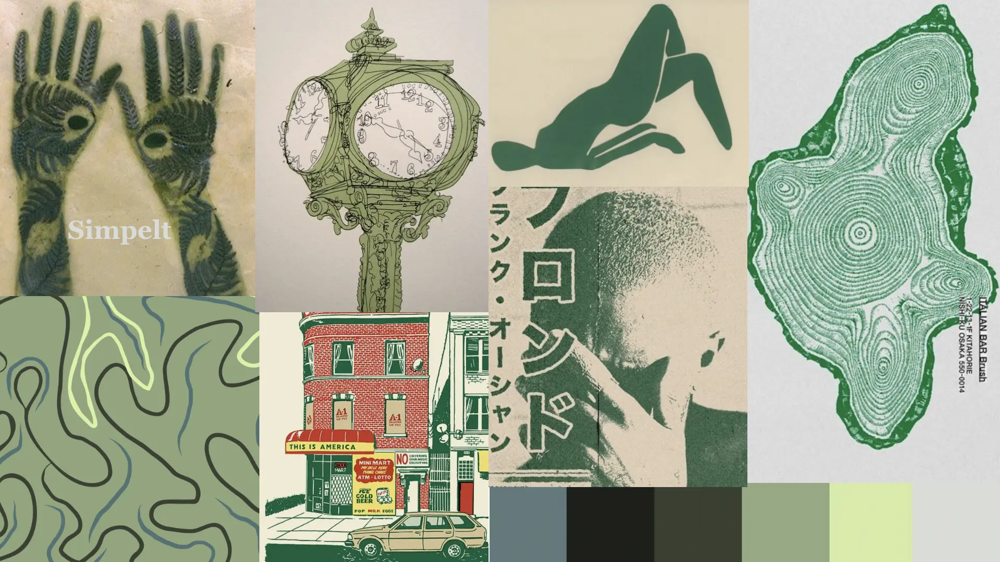

Portfolio eksamen
Refleksion over Portfolio-eksamen Portfolio-eksamen har været en spændende mulighed for at afprøve værktøjerne og vores viden fra det første semester. Designvalg og inspirationskilder var det første jeg kastede mig over. Ved brug af desk research fandt jeg farvepaletten jeg ville benytte og gik derefter igang med styletile og moodboard for at bestemme hvilken vej jeg ville gå designmæssigt. Jeg anvendte derefter wireframe for at få et overblik over hvilken struktur af designet, der virkede som den mest brugbare i forhold til de opgaver jeg ville fremhæve under hvert tema. Undervejs i processen tilpassede jeg dog wireframe når jeg fandt at andre løsninger var bedre til de forskellige opgaver. Gennem hele processen fik jeg inspiration fra tema beskrivelserne for semesteret til at bestemme hvilket indhold der var relevant at inddrage i portfolio websitet. Alt i alt en spændende process med brug af de færdigheder, viden og kompetencer jeg har tilegnet mig gennem semesteret.
Styletile og Moodboard
 
